招待講演
Navigating the ALife Career Landscape: Academia, Industry, and the Spaces Between
若手研究者に向けたキャリア講演。アカデミア、産業界、そしてそのあいだ。人工生命の研究者がたどりうるさまざまな道と、道から道へ移る方法について。主催は国際人工生命学会（ISAL）の学生支部ERA。
若手研究者に向けたキャリア講演。アカデミア、産業界、そしてそのあいだ。人工生命の研究者がたどりうるさまざまな道と、道から道へ移る方法について。主催は国際人工生命学会（ISAL）の学生支部ERA。

作品を実演するクロスラボの短い映像。AIによるリアルタイムの「体験」エフェクトが映像に重なる。

Transformerモデルが何に注意を向けているかを映し出す、装着型ARインスタレーションの発表。Oneris Rico、Nicholas Guttenberg、Olaf Witkowskiとの共同制作。

3日目の午前セッション。もっとも単純なルールで動く宇宙が、生きものについて明かすこと。

Javier Fernandez、Olaf Witkowskiとの共同研究。Redditのr/placeのキャンバスに創発するオブジェクトは、どこまで予測できるのか。講演は動画の約3分から。

Morgridge Instituteでのポスドク時代に収録したポスター発表。

オープンエンド進化（open-ended evolution）と、変化する世界で生命システムが革新を続けるしくみを支える数理モデルへの、23分の入門講義。

クロスラボの月例講演シリーズにメイン講演者として登壇。相互作用する対象からイノベーションと創発がどう生まれるのか、そしてオープンエンド性へ至る数理的な道筋について。

人工生命の国際会議ALIFE 2021での講演録画。ALIFE 2021 Best Talk Award（最優秀講演賞）を受賞。

対戦型オンラインゲームから、オープンエンド進化の一般的なメカニズムが見えてくる。

International Workshop on Cellular Automata and Discrete Complex Systemsでの招待講演。


Hector ZenilとNarsis Kianiのオンライン講座のために、ティーチングアシスタントとして収録した解説動画。最初のテーマはWolfram Languageで扱うセル・オートマトン。
Constructing Networks · Networks from Real Data (League of Legends)

Third Workshop on Open-Ended Evolutionでの短いポスター発表。

ASUの博士課程時代、Astrobiology Graduate Conferenceでの初期の講演。生命は計算できるものなのか。

目前に迫ったALIFE会議、現在の研究、そしてクロスラボのこれから。

同じ対話の、3人で語る長尺版。

人工生命、身体性、そして日本で研究生活を築くことをめぐる、幅広い対話。

アイデンティティ、科学、STEM分野のインクルーシビティ、そして少しだけLeague of Legends。
京都でのALIFE 2025開催準備の舞台裏、人工生命が日本と深く結びついている理由、そして新しいArtificial Life Instituteのいち早い紹介。
博士号取得後の人生、アカデミアの外でのキャリアの切り開き方、人工生命の学び方、そして科学と宗教の両立。
創発、知能、人間であるとはどういうことか。そして政治哲学と倫理への寄り道。
この小説の科学考証を担当し、謝辞にも名前が載っている。
Chloe Benjaminが『Under Story』のために重ねた調査をめぐる特集記事。アリッサは2022年からその科学リサーチアシスタントを務める。「これまでで一番楽しい仕事」。
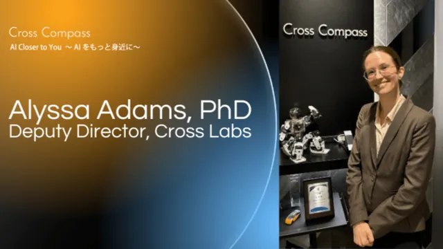
生物進化の数学を探ること、アリッサが日本に移り住んだ理由、そして研究のこれからを語ったインタビュー。
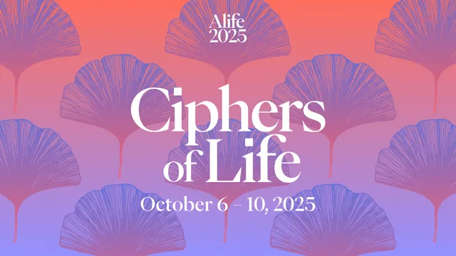
京都で開催した国際会議のプロシーディングス（論文集）の序文。共同編集者はOlaf Witkowski、Lana Sinapayen、Manuel Baltieri、Mahdi Khosravy。
米国から日本への本格的な移住と、日本にあるアリッサのラボに米国の研究者から応募が相次いでいることについて取材を受けた。
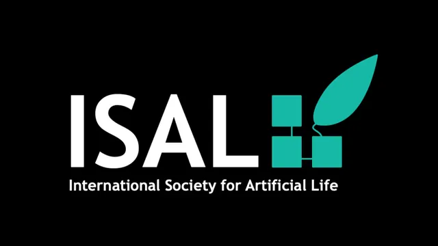
2023年の理事選挙の結果。
Oneris Rico、Nicholas Guttenberg、Olaf Witkowskiとの共著。インスタレーションの背景にあるエッセイ。殻としてのテクノロジーと、AIのアテンション（注意）を通して見ること。
Nicholas Guttenberg、Lisa Sorosとの共著。Subjective Open-Endednessと同時に公開し、同じ問いに能動的推論（active inference）から迫る。
Nicholas Guttenberg、Lisa Soros、Olaf Witkowskiとの共著。オープンエンド性はシステムの中にあるのか、それとも観察者の目の中にあるのか。
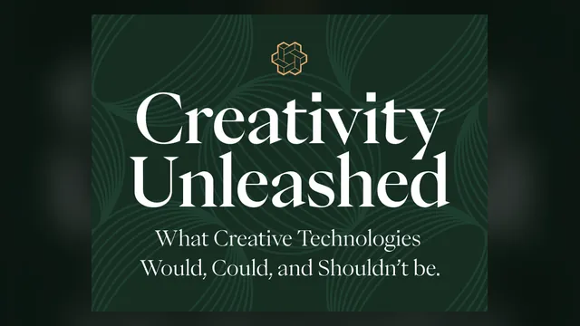
創造する機械をめぐる個人的なエッセイ。出発点は、家に来た最初のコンピューターで動かした実験的なプログラム。ワークショップCreativity Unleashedに先立って執筆。
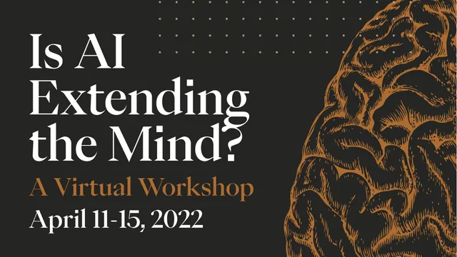
第2回クロスラボ年次ワークショップの報告。
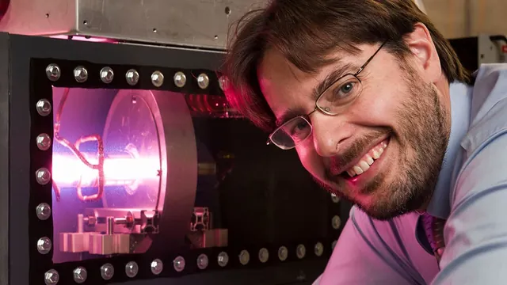
MorgridgeとUW–Madisonから生まれた、Janesvilleの核融合・医療用同位体企業SHINEの特集記事。
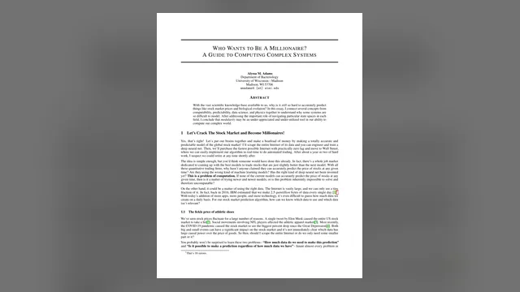
株式市場から進化まで、予測の難しいシステムをモデル化する道具として、モジュール性はもっと活用されてよいという論考。
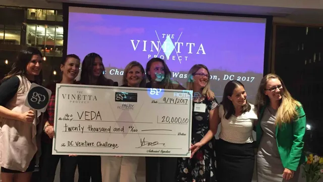
世界のデータ革命への科学的な応答としてのVEDA Labsについて、コメントが引用された。
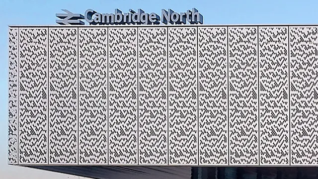
Cambridge North駅の、Rule 30模様の外壁についてStephen Wolframが書いた記事。写真はWolfram Summer School修了生のアリッサ・アダムスによるもの。
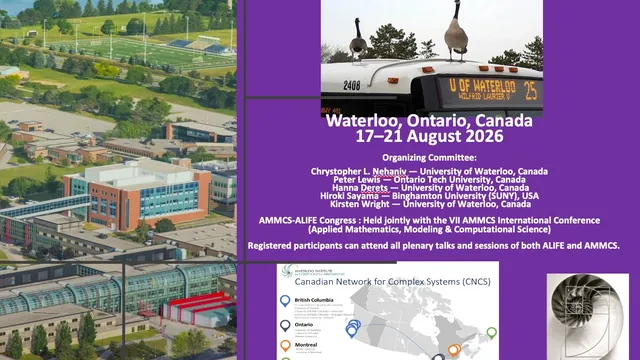
Bruno Senzio-Savino Barzellato、Mahdi Khosravy、Olaf Witkowskiと共同で企画。神経信号を、適応し進化するシステムにどう組み込めるか。

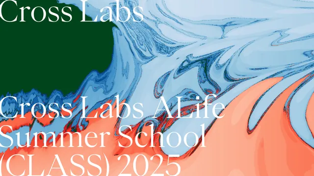
京都の中高生を対象にした、4週間の人工生命研究入門。締めくくりはALIFE 2025でのポスター発表。

第5回クロスラボ年次ワークショップ。Olaf Witkowski、Antoine Pasquali、Katsunobu Suzukiと共同で企画。Keynote Panel & Discussion #2 · イベントページ
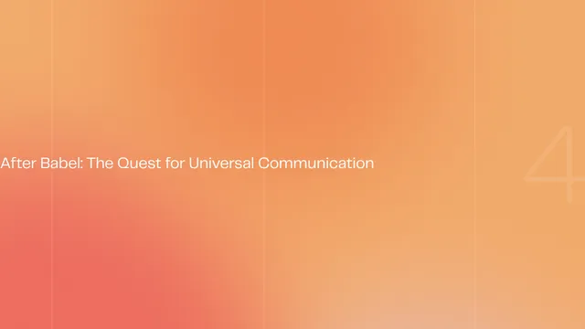
第4回クロスラボ年次ワークショップ。テーマは人間、動物、細胞、機械、そして異星人のあいだのコミュニケーション。アリッサは2つのパネル討論でモデレーターを務めた。録画
教授になれるかどうかを気に病まずに。
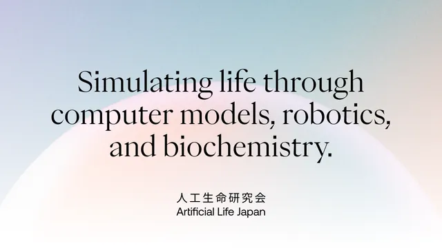
ALIFE 2024に向けた研究にフィードバックをもらう、ハイブリッド形式の研究会。会場はクロスラボ。
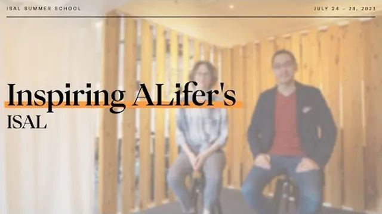
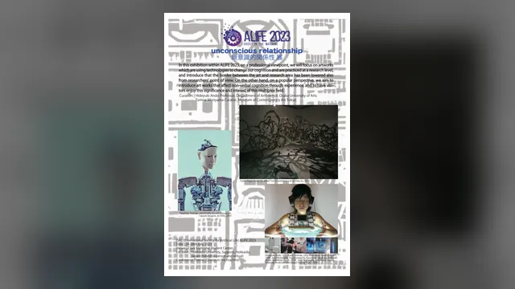
出展13作品のひとつ、Ghosts in a Shellの図録ページ。
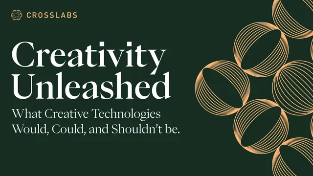
第3回クロスラボ年次ワークショップ。アリッサは2つのセッションで座長を務め、人間による円卓討論にも加わった。録画
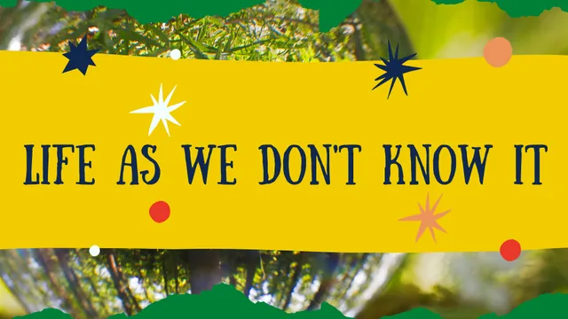
アーティストと組んで「私たちの知らない生命」を想像した、6人の科学者のひとり。2022年5月〜8月に展示。
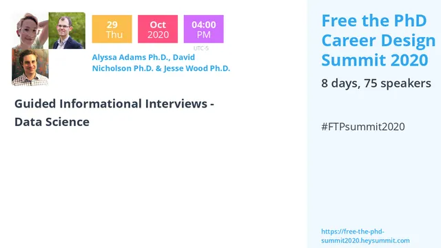
David Nicholson、Jesse Woodとのパネル討論。
2023〜24年に全25回の司会を担当。制作はOneris Rico。クロスラボの研究者たちが、AI、倫理、アート、意識、エントロピー、ときどきホットドッグについて語る。再生リスト · シリーズのページ

 25The future of open-source AI and community innovation
25The future of open-source AI and community innovation
 24The landscape of AI-generated art and hot dogs
24The landscape of AI-generated art and hot dogs
 23Challenges in simulating a neuron
23Challenges in simulating a neuron
 22Game rants and dystopian brain-ads tech
22Game rants and dystopian brain-ads tech
 21Navigating the web of deception
21Navigating the web of deception
 20Goals, values, and the philosophy of purpose
20Goals, values, and the philosophy of purpose
 19The stagnation of technological progress
19The stagnation of technological progress
 18The unaddictive yet intriguing
18The unaddictive yet intriguing
 17Scriptwriting: the balance between art and profitability
17Scriptwriting: the balance between art and profitability
 16AI and human creativity in media production
16AI and human creativity in media production
 15AI regulations, accountability, and the weight of consequences
15AI regulations, accountability, and the weight of consequences
 14Surviving disturbances in life and the Game of Life
14Surviving disturbances in life and the Game of Life
 13Life’s role in entropy
13Life’s role in entropy
 12The impact of technology on quality of life
12The impact of technology on quality of life
 11AI art vs. human art, copyright, and power dynamics
11AI art vs. human art, copyright, and power dynamics
 10Perspectives on bias, access, and empowerment on AI
10Perspectives on bias, access, and empowerment on AI
 09Will AI really destroy humanity?
09Will AI really destroy humanity?
 08Can humans be used as computational units?
08Can humans be used as computational units?
 07The business of AI: domination, data, and openness
07The business of AI: domination, data, and openness
 06Moral decision-making and the sacredness of consciousness
06Moral decision-making and the sacredness of consciousness
 05GPT models for personalized learning and the ethics of privacy in big tech
05GPT models for personalized learning and the ethics of privacy in big tech
 04What’s the medium of video games?
04What’s the medium of video games?
 03Interacting communities of AI models
03Interacting communities of AI models
 02Should language become obsolete?
01Interfaces for communicating and solving problems
02Should language become obsolete?
01Interfaces for communicating and solving problems
2022年から2026年までに14回の司会を担当し、2024年からはシリーズの共同主催者にも名を連ねる。アカデミアと産業界から幅広いゲストを迎え、知能科学、人工生命、AIを語る。再生リスト

クロスラボの講演シリーズで司会を担当。ゲストにはJoel Lehman、Kenneth Stanley、Hector Zenil、佐山弘樹らを迎えた。全エピソード
 54Vegetables here, games there: BCI and new horizons · Bruno Senzio-Savino
54Vegetables here, games there: BCI and new horizons · Bruno Senzio-Savino
 53Humanistic computation and the magic of code · Sam Arbesman
53Humanistic computation and the magic of code · Sam Arbesman
 52Autocatalytic reaction networks in ecology, evolutionary biology, and economics
52Autocatalytic reaction networks in ecology, evolutionary biology, and economics
 47How to make things evolve · Hiroki Sayama
47How to make things evolve · Hiroki Sayama
 46Can a robot have an orgasm? The value of consciousness · Axel Cleeremans
46Can a robot have an orgasm? The value of consciousness · Axel Cleeremans
 45A biophysics-based protein language model for protein engineering · Sam Gelman
45A biophysics-based protein language model for protein engineering · Sam Gelman
 44Collective intelligence in AI and ALife · Seth Bullock
44Collective intelligence in AI and ALife · Seth Bullock
 43Biosignatures and deciphering the complexity of living systems · Hector Zenil
42A social network inspired by open-endedness · Kenneth Stanley
43Biosignatures and deciphering the complexity of living systems · Hector Zenil
42A social network inspired by open-endedness · Kenneth Stanley
 41From social physiology to social neuro-AI · Guillaume Dumas
41From social physiology to social neuro-AI · Guillaume Dumas
 39How to beat superhuman Go AIs · Tony Wang & Kellin Pelrine
39How to beat superhuman Go AIs · Tony Wang & Kellin Pelrine
 38Law & artificial intelligence · Eduard Fosch-Villaronga
38Law & artificial intelligence · Eduard Fosch-Villaronga
 36Machine love · Joel Lehman
36Machine love · Joel Lehman
 35Tourism in video games: experiences in digital worlds · Anh-Thu Nguyen
35Tourism in video games: experiences in digital worlds · Anh-Thu Nguyen